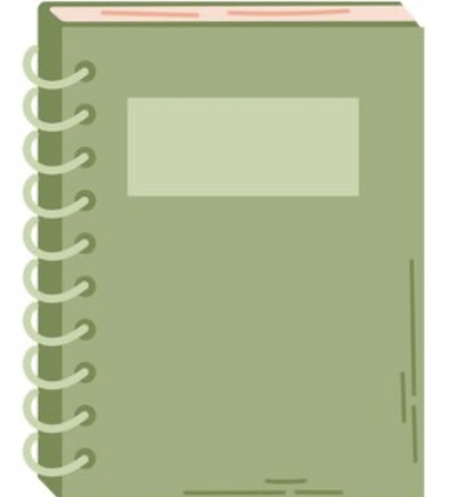
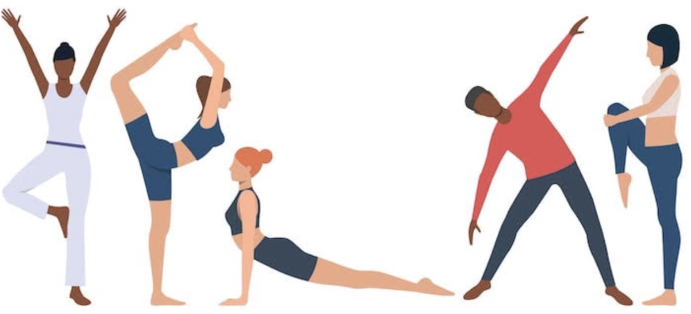
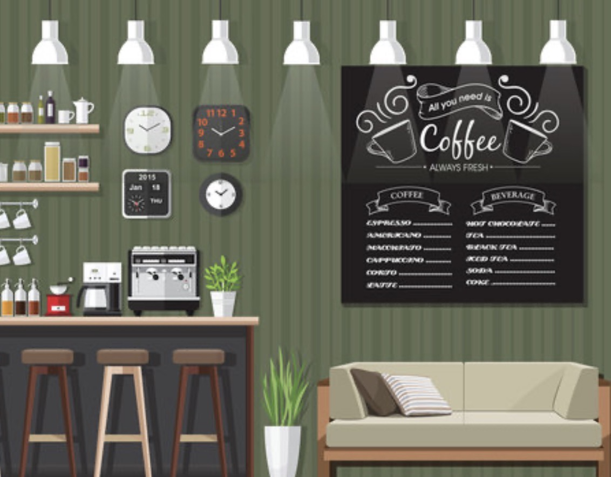
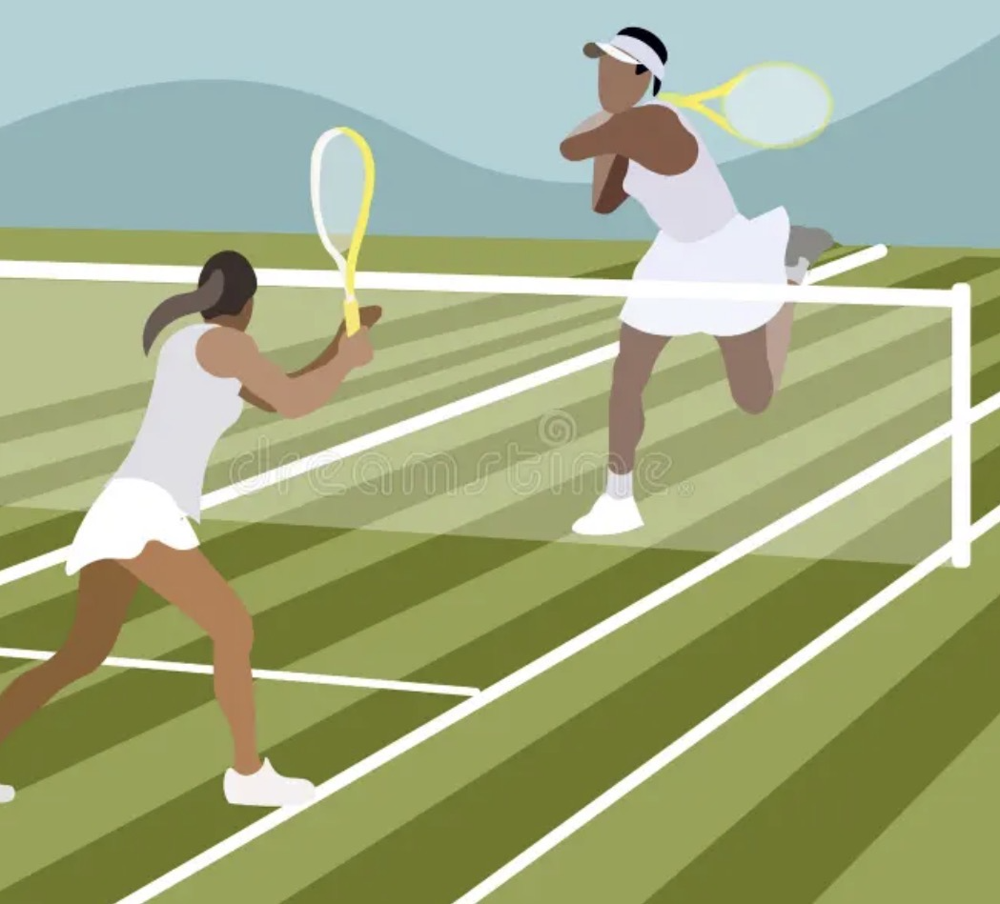

Meditation is a practice where you focus your mind and eliminate distractions to achieve a calm and clear state. Even just 5 minutes a day can reduce stress, improve focus, and boost your overall mood.

Journaling is the practice of writing down your thoughts and feelings. It helps you process emotions, track your personal growth, and gain clarity on things that are bothering you.

Exercising helps release stress while allowing you to reconnect with your mind and body. Even just taking 30 minutes everyday can make a huge difference in you mental, emotion, and physical health

Although alone time is essential to our well being, staying in our homes too much can lead to isolation. Third spaces like cafes, libraries, and parks can allow us to still appreciate alone time but in public spaces with lovely scenaries.

When finding new hobbies, you naturally create new communities with people that share a similar interest. This can help you find new friends or find new safe spaces.